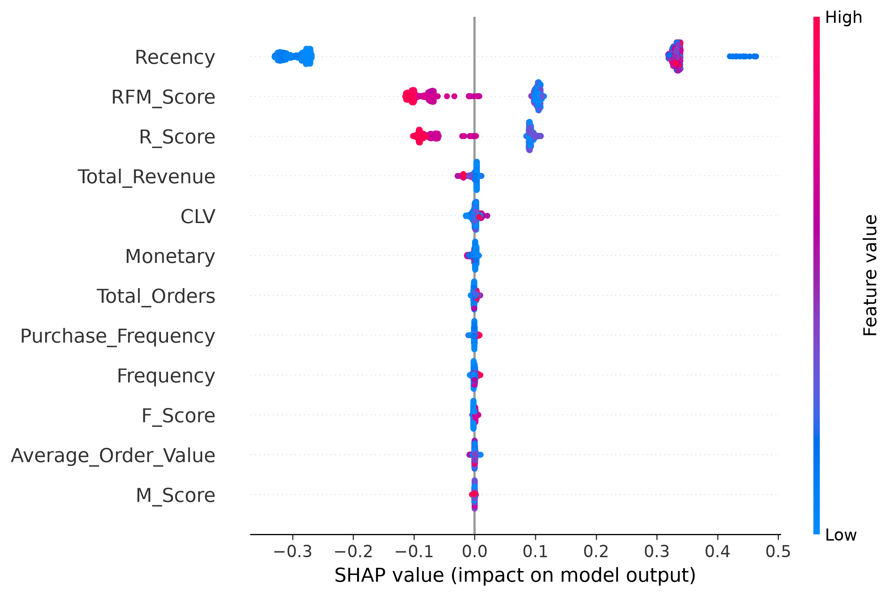
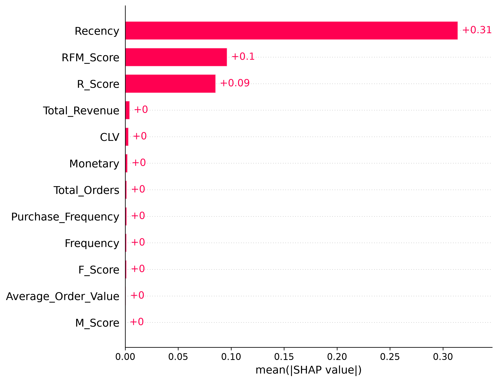

Explainable Artificial Intelligence for Customer Churn Prediction
The objective of this report is to explain how the machine learning model predicts customer churn using SHAP (SHapley Additive exPlanations). Unlike traditional feature importance methods, SHAP provides both global and local explanations, enabling transparent and interpretable predictions.
SHAP (SHapley Additive exPlanations) is an Explainable AI technique based on cooperative game theory. It assigns a contribution value to every feature for every prediction made by the machine learning model. These contribution values indicate whether a feature increases or decreases the probability of customer churn.
SHAP computes the contribution of every feature by comparing the model's prediction with and without that feature across multiple feature combinations. This ensures a fair distribution of feature importance and allows detailed interpretation of individual predictions.

The SHAP Summary Plot displays how each feature influences the churn prediction across all customers. Features are ordered by importance, with the most influential appearing at the top. Each point represents one customer.
The analysis shows that customer purchasing behavior strongly influences churn prediction. Features such as Recency, RFM Score, and R Score have the greatest impact. Customers who have not purchased recently are more likely to churn.

The SHAP Feature Importance Plot ranks features according to their average contribution to model predictions. Higher SHAP values indicate stronger influence on the prediction outcome.
The model primarily relies on customer engagement metrics rather than demographic information. This indicates that customer purchasing patterns are the strongest indicators of future churn.
| Rank | Feature | Business Meaning |
|---|---|---|
| 1 | Recency | Number of days since the customer's last purchase. |
| 2 | RFM Score | Overall customer engagement and purchasing behaviour. |
| 3 | R Score | Measures how recently customers have purchased. |
| 4 | Purchase Frequency | Indicates customer buying consistency. |
| 5 | Customer Lifetime Value (CLV) | Represents the long-term value generated by each customer. |
SHAP successfully explains how the NeuralRetail customer churn model makes predictions. The analysis demonstrates that customer purchasing behaviour, particularly Recency and RFM-based features, plays a dominant role in predicting churn. Explainable AI enhances model transparency, enabling business users to understand predictions and make informed customer retention decisions.